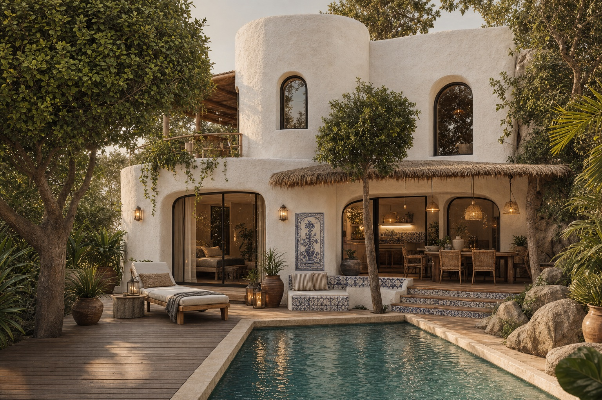

Your white-plaster house, built from the two reference photos — then the same house again with classical Portuguese work layered on: Lisbon azulejo, the Alentejo painted stripe, the Moorish Algarve. Twenty-four angles in each, inside and out.
Everything starts from the 3D plan of the subsolo; the shell comes from the first photo, the styling from the second; the Portuguese layers sit on top of that.